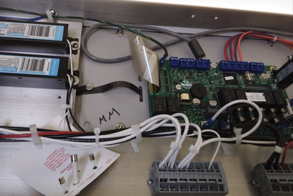
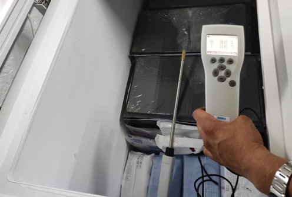

Mantenimiento
Es la acción de revisar de manera sistemática y bajo
ciertos criterios a los equipos de laboratorio y/o proceso
para evitar averías ocasionadas por uso o desgaste por el
paso del tiempo.
Servicio de mantenimientos correctivos y preventivos para equipos de laboratorio
tales como:
- Autoclaves de vapor autogenerado
horizontales, verticales - Cámaras de estabilidad
- Incubadoras
- Incubadoras con CO2
- Gabinetes de seguridad biológica
clase II - Campanas de flujo laminar
- Campanas de extracción
- Centrífugas
- Hornos de vacío
- Hornos de secado
- Parrillas de agitación
- Agitadores magnéticos
- Sistemas de purificación de agua
grado I, II y III - Ultracongeladores
- Refrigeradores
- Vórtex
- Lavadores de microplacas de ELISA
- Lector de ELISA
- Espectrofotómetros
- Termocicladores de tiempo real
- Mufla
- Tamizador ultrasónico
- Integridad de filtros HEPA
(manejadoras de aire, filtros
terminales y equipos de laboratorio

Calibración
Es una relación entre los valores y su incertidumbres de
medidas asociadas obtenidas a partir de los patrones de
medida, y las correspondientes indicciones con sus
incertidumbres asociadas, esta información se utiliza
para establecer una relación que permita obtener un
resultado de medida a partir de una indicación
Sercicio de calibración con acreditación
ante la EMA
- Calibración de microvolumen desde 1ul
hasta 5L - Calibración de pesas, marcos de pesas,
balanzas y micro
balanzas - Calibración en humedad relativa del
10%H.R. a 95%H.R. - Calibración en temperatura de -90°C a 650°C
- Calibración en presión hasta 10,000 PSI
Servicio de calibración por trazabilidad con
patrones nacionales
patrones nacionales
- Calibración de microvolumen desde 1ul
hasta 5L - Calibración de pesas, marcos de pesas,
balanzas y micro
balanzas - Calibración en humedad relativa del
10%H.R. a 95%H.R. - Calibración en temperatura de -90°C a 1100°C
- Calibración en presión hasta 10,000PSI
